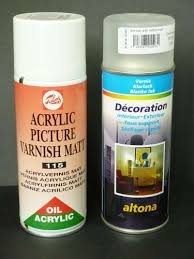
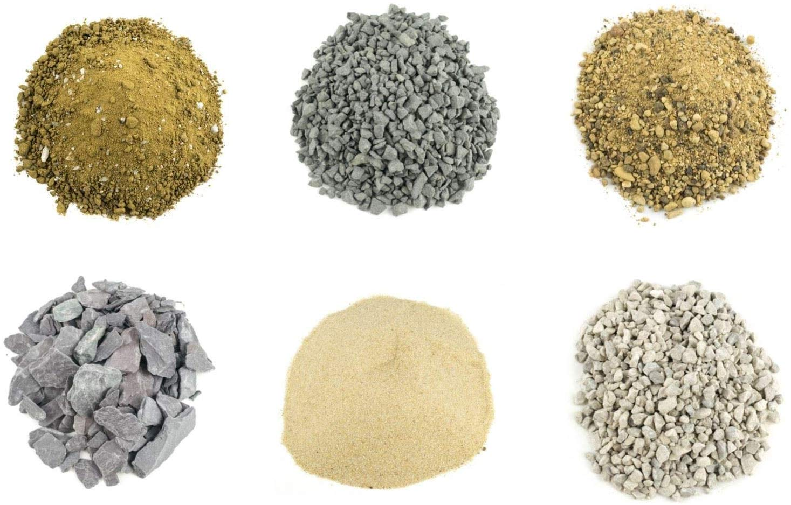

Une fois peinte, la figurine peut être vernie.
Le vernis a une double fonction : protection et aspect.
On distingue comme en peinture classique les vernis mats ou brillants.
Il est à noter que dans certains cas, la figurine sera plus naturelle sans vernis,
notamment dans les cas de figurines non ou peu vétues (animaux, monstres, hommes-bête...)

Le socle peut également être peint, ou floqué.
Le flocage consiste à recouvrir le socle avec une matière rappelant le décor ou l'habitat naturel de la figurine.
On peut ainsi le recouvrir par exemple d'herbe, de sable, de graviers, à partir d'un mélange à base de colle à bois et éléments naturels ou synthétiques.
